Assignment 2
Author : Zesheng Jia
A_number : A00416452
Question 1: (3 points) Application Layer Protocols
Snapchat, Instagram and Twitter are all smartphone real-time social media applications. After doing some research on the Internet, for each of these applications, write one paragraph about the protocols they use. Then write one paragraph explaining how they differ.
Sol.
Snapchat:
SIP protocol. RTP protocol.
Session Initiation Protocol (SIP) is one of the most common protocols used in VoIP technology. It is an application layer protocol that works in conjunction with other application layer protocols to control multimedia communication sessions over the Internet.
Ref: https://www.tutorialspoint.com/session_initiation_protocol/session_initiation_protocol_introduction.htm
As we know, the users use snapchat for sending multimedia messages to each other. Also, it belongs to SIMPLE protocol.
SIMPLE, the Session Initiation Protocol for Instant Messaging and Presence Leveraging Extensions, is an instant messaging (IM) and presence protocol suite based on Session Initiation Protocol (SIP) managed by the Internet Engineering Task Force.[1] Contrary to the vast majority of IM and presence protocols used by software deployed today, SIMPLE is an open standard like XMPP.
Ref: https://en.wikipedia.org/wiki/SIMPLE_(instant_messaging_protocol)
Instagram (also known as IG[8]) is a photo and video-sharing social networking service owned by Facebook, Inc.
We can use Instagram for sharing photos and videos.
It can use http stream protocol, https protocol, rtsp protocol.
HIPSTER PHOTO-SHARING APP Instagram will switch to HTTPS following the discovery of a zero-day vulnerability in the mobile app that is believed to allow an attacker to hijack a user's account.
Ref: https://www.theinquirer.net/inquirer/news/2357779/instagram-to-use-https-following-discovery-of-gaping-security-hole-in-ios-app
Because most of words, photos and pre-stored videos can be used
by http/https protocol.
And the video streaming can be used by http steam protocol or
rtsp protocol.
Http protocol.
Most of twitter content is photo, video and message. Therefore,
if use http protocol, then most of features can be
accomplished.
Because http protocl can contain multimedia information and
transmit from server to client.
Differ
- http vs sip
sip is a p2p protocol. - http stream vs http
http stream and rtsp can send video stream to client.
HTTP protocol can't.
HTTP servlets have a particular context (called the context-root) in which they run, while SIP servlets have no context.
HTTP servlets typically return HTML pages to the requesting client, while SIP servlets typically connect SIP-enabled clients to enable telecommunications between the client and server.
SIP is a peer-to-peer protocol, unlike HTTP, and SIP servlets can originate SIP requests, unlike HTTP servlets which only send responses to the originating client.
SIP servlets often act as proxies to other SIP endpoints, while HTTP servlets are typically the final endpoint for incoming HTTP requests.
SIP servlets can generate multiple responses for a particular request.
SIP servlets can communicate asynchronously, and are not obligated to respond to incoming requests.
SIP servlets often work in concert with other SIP servlets to respond to particular SIP requests, unlike HTTP servlets which typically are solely responsible for responding to HTTP requests.
Ref: https://docs.oracle.com/cd/E19355-01/820-3007/gfmpm/index.html
As for applications,
snapchat use sip protocol.
Twitter and instagram uss http stream protocol.
And all of them use http protocl.
Question 2: (2 points) Layering and Encapsulation
The protocol layers in the TCP/IP stack were motivated by isolating responsibilities of the network to one layer. This division usually means that specific pieces of data only appears in that layer. For example, the IP address of a packet only appears in the network layer header. On the other hand, the number of bytes in the message often appears in each layer's header, which seems redundant.
a) Explain why might we tolerate this redundancy?
Sol.
First of all, we haven't come up with a solution that can eliminate this redundancy. And the benefit of layers is much more than this redundancy.
After we divide protocol as different layer, and the specific
pieces of data only show in that layer. We make our data
transmitting become more safety.
However, we must add number of bytes in the message in each
layer. Otherwise, base on packets-switched networks, we won't
know how many packets belong to one message. And it also suits
for other layers.
b) Consider the airline travel analogy in our discussing of layering and the addition of headers to protocol data units as they flow down the protocol stack. Is there an equivalent notion of header information that is added to passengers and baggage as they move down the airline protocol stack?
Sol.
Yes, similar to Protocol layers.
Onece we purchase the tickets. There are our flying information
on it.
We use those information, as gate port, time, airline number to
find our airplane. The ticket is similar to the header.
In the meantime, there will be a tag on our baggage. Like the
header too.
According to those headers, ouself and our baggage will find
the destination at the end.
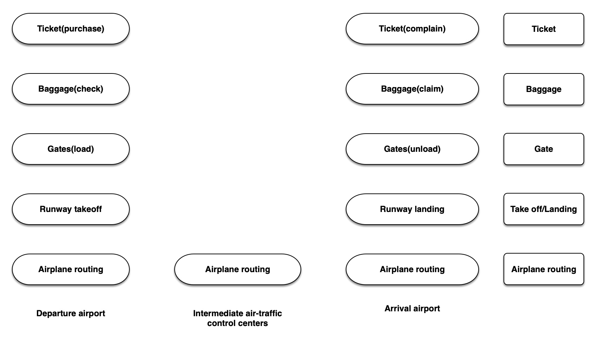
Question 3: (6 points) Network Application Architectures.
We discussed three application architectures: client-server, P2P, and a hybrid of the two. Classify each of the scenarios below as client-server, P2P, or hybrid, and explain your answer briefly. Answering these questions may require some Web surfing.
a) EBay
Sol.
Hybrid application architecture.
Because we can get all the commodity information from eBay's
server.
Buy things also is client-server architecture.In this
part, we only need to send requests to the server and get
feedback. In the meantime, eBay's website is an always-on host->server.
We only need to deal with requests and responses.
And on the other hand, we also can have chat with the personal
merchants on eBay, who used desktops and laptops by themselves.
This part will be P2P architecture.
Because every hosts right now could receive and send requests
as messages.
b) Skype
Sol.
Most of functions of Skype belongs to P2P.
Because main feature of Skype is video chatting or words
chatting.
The users use their applications to provide info and data.
Create the main accomplish of Skype.
Because those communication without passing through a dedicated
server. All the host are provide by personal users.
c) Telnet
Sol.
It belongs to client - server architecture
Telnet is a protocol used on the Internet or local area network to provide a bidirectional interactive text-oriented communication facility using a virtual terminal connection. User data is interspersed in-band with Telnet control information in an 8-bit byte oriented data connection over the Transmission Control Protocol (TCP).
Telnet's communication based on server and client in
bidirectional way.
There is an always-on host, server and a host who always send
requests, client.
It is a typically client-server architecture.
d) What are some advantages that P2P provides over client-server architecture?
Sol.
- No need an expensive server for handling requests. Each host could done the tasks.
- P2P's self-scalability.
Although, each peer generates workload by requesting files, each peer also adds service capacity to-the system by distributing files to other peers.
- Cost effective.
Since they normally don't require significant server infrastructure and server bandwidth.
Ref: From text book.
e) What P2P file sharing protocol is attributed to producing the most P2P traffic on the Internet today?
Sol.
Likely from BitTorrent.
The most popular P2P file distribution protocol is BitTorrent.
Ref: Text book.
f) When you are using P2P networks, how can you be sure that the files you are downloading are not copyrighted and are safe from malware?
Sol.
Simply say that we can not be sure.
Every files from P2P networks are un-checked. Because it is
uploaded by individual users. Some P2P provider will check the
files for us, but it is still not 100% security.
However, there is a few things we can do to prevent any
dangerous things happening.
- Don't not download from suspected website.
- Check others' comments first.
- Use antivirus program for scanning every file that you download.
- Maybe do not use P2P file distribution system.
Question 4: (5 points) HTTP
Obtain HTTP/1.1 specification (RFC 2616). Answer the following questions:
a) Explain the mechanism used for signaling between the client and server to indicate that a persistent connection is begin closed. Can the client, the server, or both signal the close of a connection?
Sol.
After server sending all response.
- The HTTP server process tells TCP to close the TCP connection.(But TCP doesn't actually terminate connection until it knows for sure that the client has recevied the response message intact.)
- The HTTP client receives the response message with close connection message. The TCP connection terminates.
- By
connection:closeheader line.
Yes. Both of them can signal the close of a connection.
In persistent connection mode, the server will leaves the TCP connection open after sending a response. Subsequent requests and responses between the same client and server can be sent over the same connection.
The requests from client and for objects can be made back-to-back, without waiting for replies to pending requests.
Typically, the HTTP server closes a connection when it isn't used for a certain time(a configurable timeout interval).
The client won't wait for server's response forever, after sending all request, it will wait a certain time.If there is no response from server, the connection will close. As same as the server.
b) What encryption services are provided by HTTP?
Sol.
There is no certain encryption services in HTTP 1.1 RFC
2616
However, we can find a few encoding in this version of
protocol.
In section, 3,5 Content Coding
Ref: https://www.ietf.org/rfc/rfc2616.txt
3.5 Content CodingsContent coding values indicate an encoding transformation that has
been or can be applied to an entity. Content codings are primarily
used to allow a document to be compressed or otherwise usefully
transformed without losing the identity of its underlying media type
and without loss of information. Frequently, the entity is stored in
coded form, transmitted directly, and only decoded by the recipient.content-coding = tokenAll content-coding values are case-insensitive. HTTP/1.1 uses
content-coding values in the Accept-Encoding (section 14.3) and
Content-Encoding (section 14.11) header fields. Although the value
describes the content-coding, what is more important is that it
indicates what decoding mechanism will be required to remove the
encoding.
And 3.6 Transfer Codings.
In order to use encryption services, we could apply https
protocol
which includes a secure socket layer within the HTTP protocol
and therefore can encrypt sent messages.
However, things changed after
June,2017
.
RFC 8188 added encryption into HTTP protocol.
Encrypted Content-Encoding for HTTP
Abstract This memo introduces a content coding for HTTP that allows message payloads to be encrypted. Status of This Memo This is an Internet Standards Track document. This document is a product of the Internet Engineering Task Force (IETF). It represents the consensus of the IETF community. It has received public review and has been approved for publication by the Internet Engineering Steering Group (IESG). Further information on Internet Standards is available in Section 2 of RFC 7841. Information about the current status of this document, any errata, and how to provide feedback on it may be obtained at http://www.rfc-editor.org/info/rfc8188.
c) Can a client open three or more simultaneous connections with a given server?
Sol.
Yes. As we using threads or processes to deal with multiple
request from client at server. It is also available for one
client open multiple simultaneous connections with one
server.
And in HTTP 1.1, it will works more properly.
2.1. Connection persistence
The process of establishing a connection from one host to another is quite complex and involves multiple packet exchanges between two endpoints, which can be quite time consuming. The overhead of connection handshaking can be significant, especially for small HTTP messages. One can achieve a much higher data throughput if open connections can be re-used to execute multiple requests.
HTTP/1.1 states that HTTP connections can be re-used for multiple requests per default. HTTP/1.0 compliant endpoints can also use a mechanism to explicitly communicate their preference to keep connection alive and use it for multiple requests. HTTP agents can also keep idle connections alive for a certain period time in case a connection to the same target host is needed for subsequent requests. The ability to keep connections alive is usually refered to as connection persistence. HttpClient fully supports connection persistence.
Ref: https://hc.apache.org/httpcomponents-client-ga/tutorial/html/connmgmt.html
d) Either a server or a client may close a transport connection between them if either
one detects the connection has been idle for some time. Is it possible that one side starts closing a connection while the other side is transmitting data via this connection? Explain.
Sol.
Yes, it is possible.
According to RFC 2616 8.1.4
Because HTTP is stateless. Neither of client and server will
know other states, unless receiving message.
However, according to RFC 2616 8.1.4, client and
server can recover the session and retransmit the messages.
8.1.4 Practical Considerations
Servers will usually have some time-out value beyond which they will
no longer maintain an inactive connection. Proxy servers might make
this a higher value since it is likely that the client will be making
more connections through the same server. The use of persistent
connections places no requirements on the length (or existence) of
this time-out for either the client or the server.When a client or server wishes to time-out it SHOULD issue a graceful
close on the transport connection. Clients and servers SHOULD both
constantly watch for the other side of the transport close, and
respond to it as appropriate. If a client or server does not detect
the other side's close promptly it could cause unnecessary resource
drain on the network.A client, server, or proxy MAY close the transport connection at any
time. For example, a client might have started to send a new request
at the same time that the server has decided to close the "idle"
connection. From the server's point of view, the connection is being
closed while it was idle, but from the client's point of view, a
request is in progress.This means that clients, servers, and proxies MUST be able to recover
from asynchronous close events. Client software SHOULD reopen the
transport connection and retransmit the aborted sequence of requests
without user interaction so long as the request sequence is
idempotent (see section 9.1.2). Non-idempotent methods or sequences
MUST NOT be automatically retried, although user agents MAY offer a
human operator the choice of retrying the request(s). Confirmation by
user-agent software with semantic understanding of the application
MAY substitute for user confirmation. The automatic retry SHOULD NOT
be repeated if the second sequence of requests fails.Servers SHOULD always respond to at least one request per connection,
if at all possible. Servers SHOULD NOT close a connection in the
middle of transmitting a response, unless a network or client failure
is suspected.Clients that use persistent connections SHOULD limit the number of
simultaneous connections that they maintain to a given server. A
single-user client SHOULD NOT maintain more than 2 connections with
any server or proxy. A proxy SHOULD use up to 2*N connections to
another server or proxy, where N is the number of simultaneously
active users. These guidelines are intended to improve HTTP response
times and avoid congestion.
e) How is HTTP2 different from HTTP1.1?
Sol.
Http2 allows multiple requests and replies to be interleaved in the same connection.
HTTP/2 supports queries multiplexing, headers compression, priority and more intelligent packet streaming management. This results in reduced latency and accelerates content download on modern web pages.
Ref: https://stackoverflow.com/questions/28592077/difference-between-http-1-1-and-http-2-0
Question 5: (16 points) Programming with Sockets
The purpose of this exercise is to help you practice the basics of socket programming for TCP connections: how to create a socket, bind it to a specific address and port, as well as send and receive a HTTP packet. You will write a program that serves as a primitive web server. Your web server is very basic for now, it can handle the following:
- Create a connection socket when contacted by a client (web browser)
- Receive the HTTP request from this connection
- Parse the request to determine the specific file being requested
- Get the requested file from the server’s file system
- Create an HTTP response message consisting of the requested file preceded by header lines; and
- Send the response over the TCP connection to the requesting browser.
- If a browser requests a file that is not present in your
server, your server should return
“404 File Not Found” error message.
Your job is to:
Task 1: (8 points) implement the server code. You server should do the following:
- Take one argument denoting the port number to which the web server should bind.
- Initialize appropriate sockets
- Enter an infinite loop that
o Waits for one or more clients to connect o Connects to each client
o Processes client’s requests - Server processes clients requests as follows:
o receive a request message
o parses the message and extract the requested file path
o send back appropriate response depending on the request and/or availability of
the file
o close connection with the client
Source code:
Task 2: (4 points) Test your server by sending requests from browsers running on different hosts.
- Put an HTML file (e.g., HelloWorld.html) in the same directory that the server is in.
- Run the server program. Determine the IP address of the
host that is running the
server (e.g., 128.238.251.26). - From another host, open a browser and provide the
corresponding URL. For
example: http://128.238.251.26:6789/HelloWorld.html .‘HelloWorld.html’ is the name of the file you placed in the server directory. Note also the use of the port number after the colon. - You need to replace this port number with whatever port you have used in the server code. In the above example, we have used the port number 6789.
- The browser should then display the contents of HelloWorld.html. If you omit ":6789", the browser will assume port 80 and you will get the web page from the server only if your server is listening at port 80.
- Then try to get a file that is not present at the server. You should get a “404 Not Found” message.
Test:
Output:
Brief:
I bought a domain name - easonjia.online.
Already link to os.cs.smu.ca server
Environment : Java.
Port : 1989
1. First attempt
correct file name request with 200 OK response
Server side:
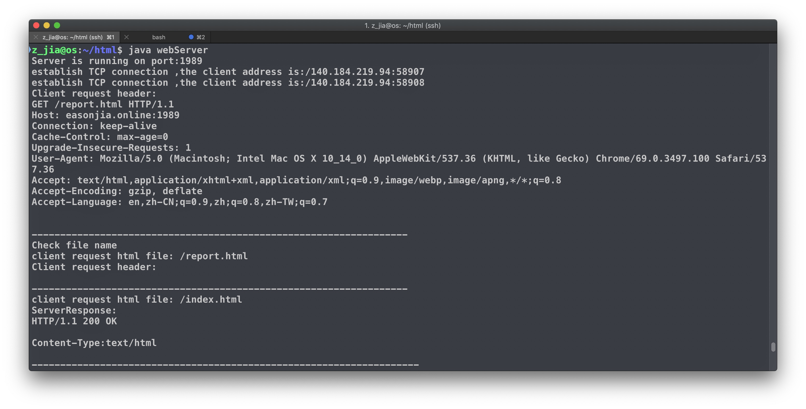
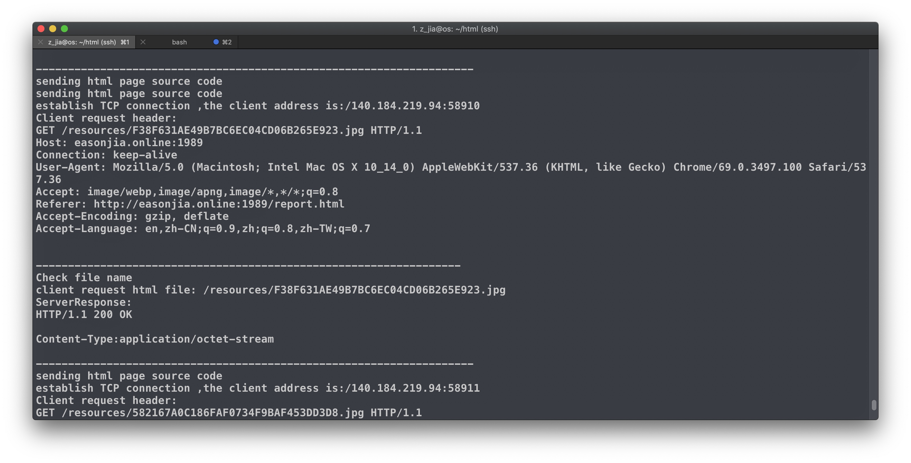
client side:
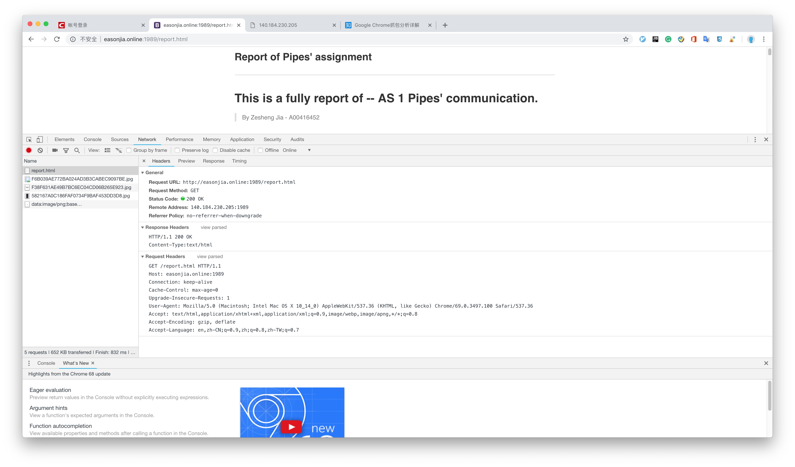
2. Second attempt
wrong/not exist file name request with 404 not Found response
Server side:
Intent to print out Error message. Already catch error and deal with it properly.
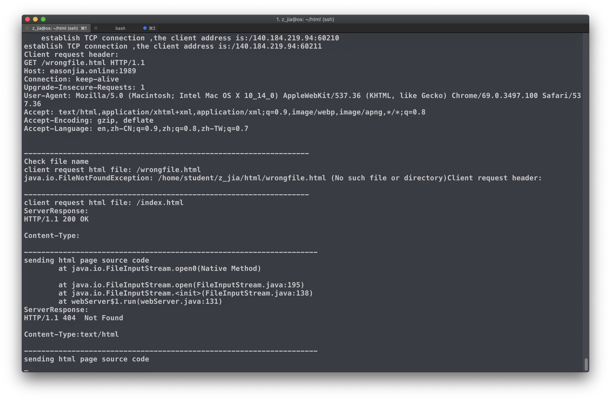
client side:
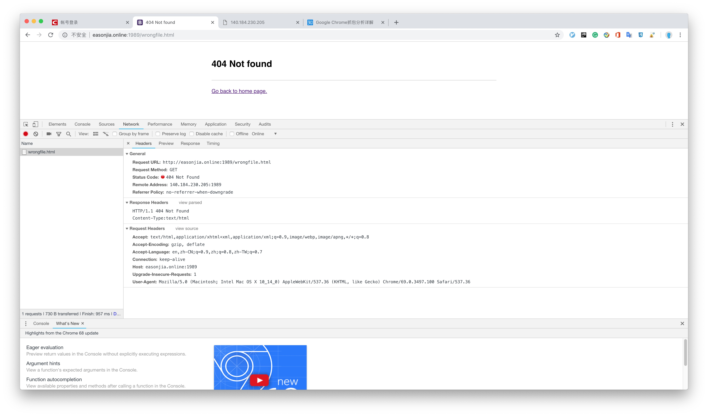
various client attempts
First attempt
client ip: 140.184.56.215:54180
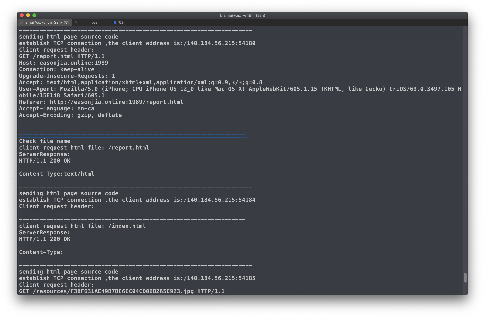
Second attempt
client ip: 140.184.219.94:64584
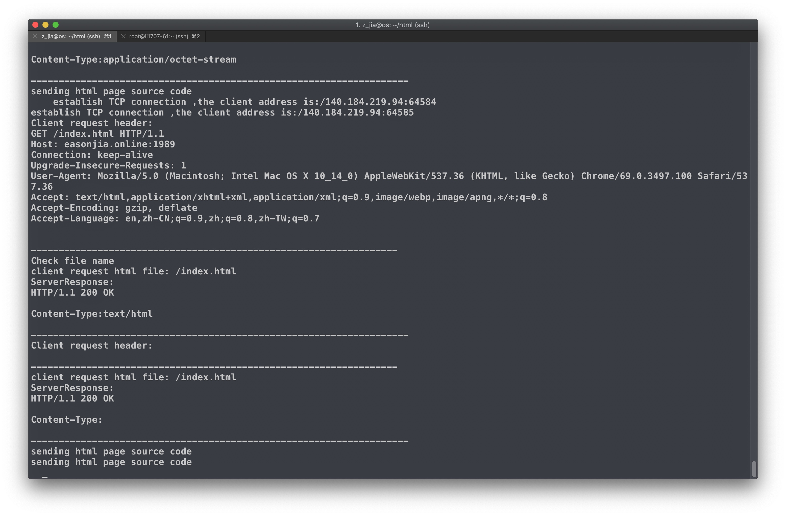
Third attempt
client ip: 172.104.97.61:53161
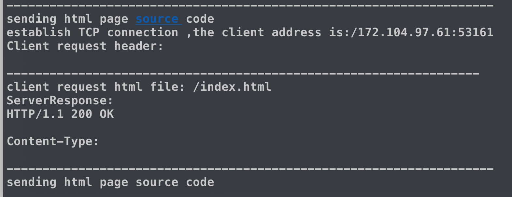
Task 3: (4 points) answer the following questions:
1. Is there a limit on the size of the file that can be sent? Why?
Sol.
No.
There is no limitation on response message. There is a content-length in request header, but not in response header. Because of this setting, we can send unlimited size of file to client. It also is good way to handle downloading files for client.
2. In the case when a client requests a large file (e.g., few gigabytes in size), what happens to clients that are waiting?
Sol.
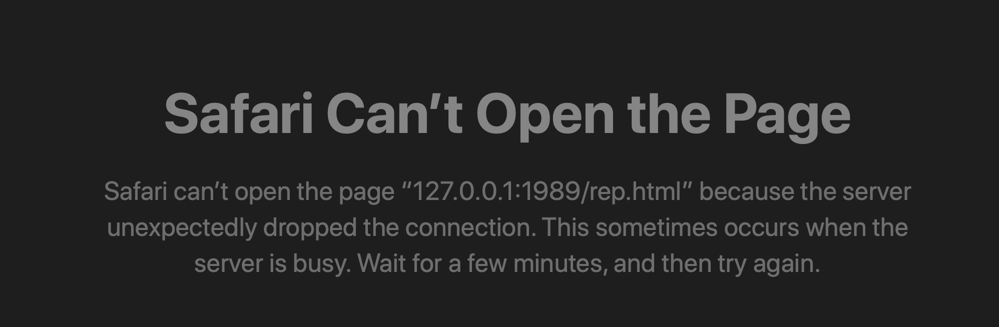
If the file is too big and server's throughout is not enough, then the server/client will have a big delay on file transferring. If there are a lot of users are sending big file requests to server, then it could cause block.
3. Why is it important to close a file after it is sent?
Sol.
If we don't close file inputStream, then the system call file
read() will continue stand by. And if there is another
user wants to read file, then this new thread will have a block
until last file inputStream release lock. If we forget to close
file stream, then the waiting time will be infinity. Therefore,
in order to be more efficient, we close file stream immediately
after we finishing reading.
4. Why it is important to close the connection after a response is sent?
Sol.
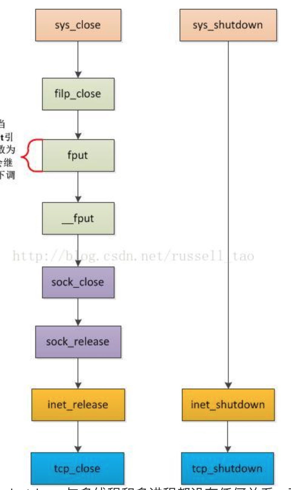
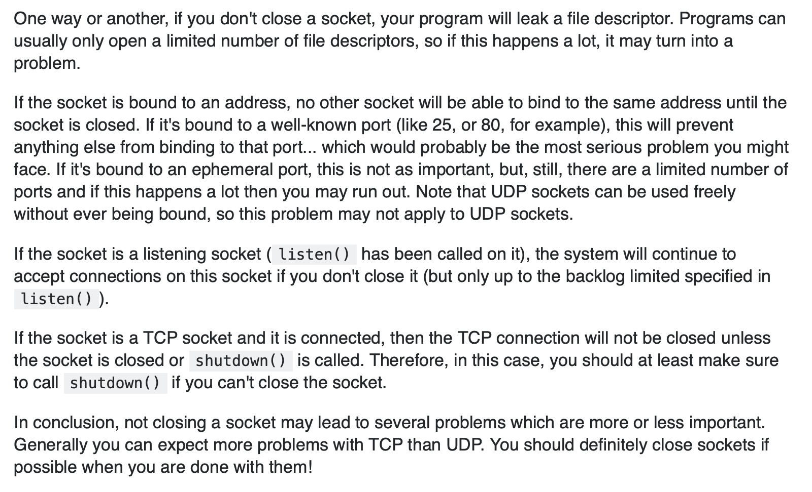
Ref: 1. https://blog.csdn.net/zhangxiao93/article/details/52078784
Ref: 2. https://www.cnblogs.com/lidabo/p/4534755.html
Ref: 3. https://stackoverflow.com/questions/17077096/do-i-need-to-close-a-socket
According to the information from the Internet, we know that if we don't close connection, the system will have problems.But, what problems?
When we write our server program, we create multiple threads/processes to deal with client request. Otherwise, there will be only one client can be serve at a time. However, the number of threads/processes can be invoked is limited. It depends on the server's computer configuration or the thread pools setting by developer. If there are too many sockets(threads) in the same time, the server will have block.And also, we know that after a client request for establishing a connection, the server will send response back. And client will close connection/socket first. Then Server will close.
In persistent connection, By TCP protocol, if client didn't close immediately, after a certain time, the connection will still close by server. And in non-persistent connections, every single request/response finished, the connection will close.
Those rules are preventing server for blocking. If we don't close connection after sending response, server will continue listen to a socket that is already closed by client. And it will have block. So we close connection right after sending response.
NOTE: if you run your server on a host that already has a web
server running on it, then you should use a different port that
80.
What to hand in? You will hand in the complete webServer code
along with the screen shots of your program runs, verifying
that you server is able to connect to web clients and send the
responses.
Evaluation Criteria
-
Correctness: Program is free of syntax and logical errors. Program must meet the
requirements specified in the assignment description. Proper handling of exceptions,
error conditions, and special cases as well as providing correct results/output. -
Testing: test cases provided take into consideration all cases including error conditions
and special cases. Test your web server using various web clients. -
Style: code is general purpose and well organized
Documentation: Your program is properly documented; at the beginning of each
class/function, there is a brief description about the class/function, its main
characteristics, main functionality and proper usage. -
Efficiency: program should use the most appropriate solution/method
-
Interface: program must be simple to use. Your program uses simple and clear
messages when prompting the user to enter data. Your program notifies the user with a closing message when the program is terminated.
Self-evaluation
Please answer the following questions:
- [1 points] Were you able to complete this assignment? What
grade are you expecting? Justify.
- Yes, I hope I can get 100%.
- I put a lot of time on this assignment, I read all the information I can get to answer the question.
- I spent hours to optimize my webServer program. It works smoothly.
- [1 points] Describe 2-3 challenges you faced while
completing this assignment. How did you tackle those
challenges?
- Identify those app's application layer protocol. Really hard to find any information about this question.
- Learn how to write server side program.
- Optimize performing of server side.
- Read RFC 2616.
- I spent more and more time to tackle those challenges. Anything about those challenges is learn more.
- [1 points] Provide a break down for the
activities/milestones for this assignment. Give an estimate
of hours spent on each activity. Try to be honest!
- Evaluation Scheme
| Date | Activities | Hours | Outcome |
|---|---|---|---|
| Oct.05 | Writing socket | 2 hours | Finish first stage |
| Oct.07 | Finish whole project | 6 hours | Optimize program and writing 404 not found with 200 OK response |
| Oct.08 | Writing questions | 8 hours | searching a lot of information from the Internet and textbook. Spent a lot of time reading. |
| Oct.08 | finish questions | 4 hours | learn a lot of things about protocol |